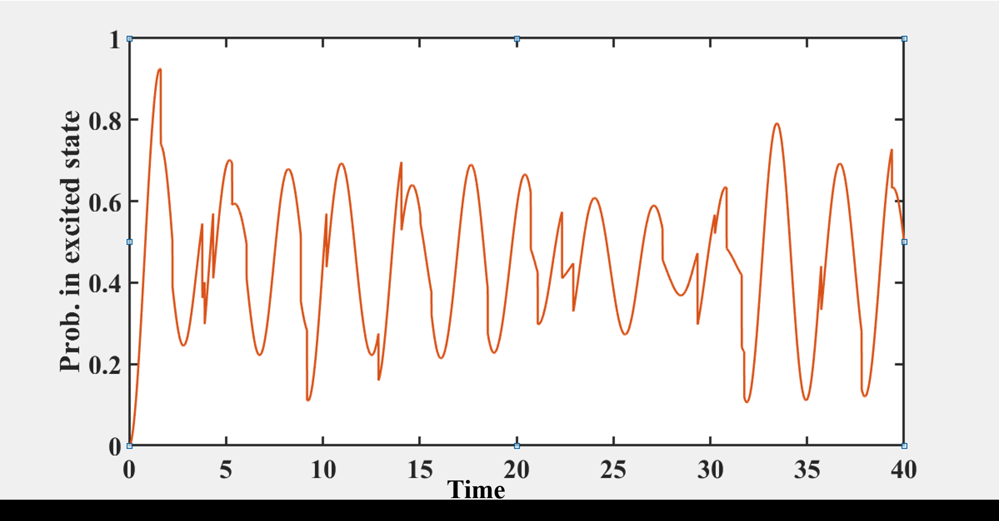
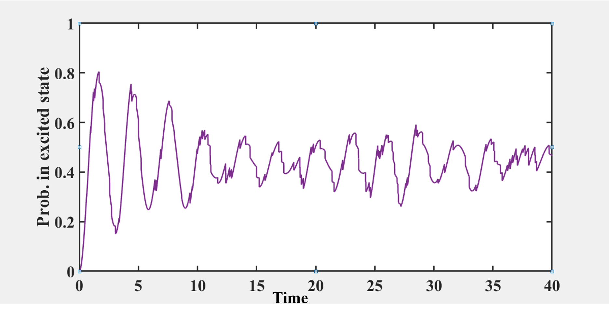
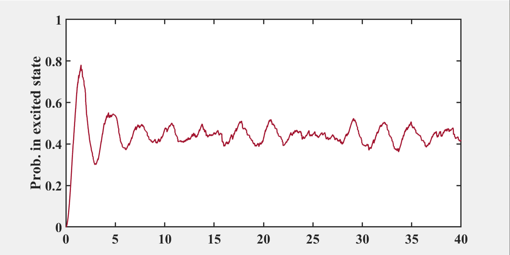
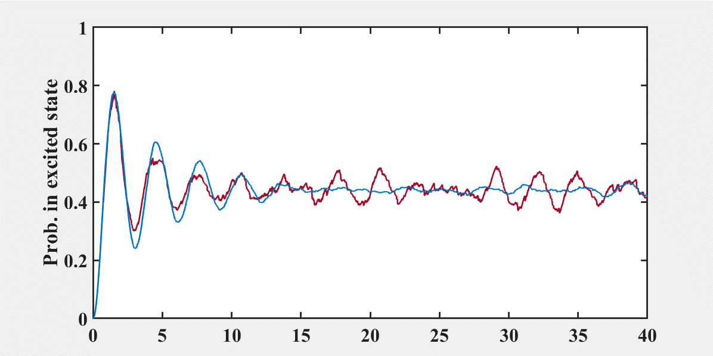

确定演化或随机演化
Lindblad 主方程为建模开放量子系统提供了一个通用的框架。我们已经推导并使用的标准形式为：
dtdρs=−i[Hs,ρs]+m∑2γm(2LmρsLm†−Lm†Lmρs−ρsLm†Lm)=−i[Hs,ρs]+2γN⋅(2a†ρsa−aa†ρs−ρaa†)+2γ(N+1)⋅(2aρsa†−a†aρs−ρsa†a)
其中 ρs 是系统的密度矩阵，Hs 是系统哈密顿量，a 是系统与热库耦合的系统算符，而 γ 是损耗速率。且使用了一些近似，如旋转波近似忽略了 a†b† 并保留 a†b；马尔可夫近似使得热库迅速恢复平衡。
这个方程是完全确定性的。原则上，只要给定初始态 ρs(0)、哈密顿量 Hs、衰减速率 γ 和热库温度 N，我们可以确定地计算出任何未来时刻的状态 ρs(t)。
但是这种确定性产生了一个概念上的难题：
-
量子力学本质上是概率性的。测量的结果是随机的，我们只能计算概率。
-
主方程描述了 ρs 的演化，它给出了系统上任何测量的概率分布。
-
然而，支配这个概率分布的方程本身却是确定性的。
那么为什么一个确定性方程能够描述一个本质上随机的过程？这一悖论的解决在于理解密度矩阵 ρs(t) 真正代表了什么。系综诠释：确定性的 Lindblad 方程并不描述单个量子系统的命运，而是描述系综平均的演化。
考虑一个处于激发态的单原子并观察其衰减。我们将在一个随机的时刻观测到一个单一的、不可预测的量子跃迁。现在用相同的原子多次重复这个实验。Lindblad 主方程描述的是在整个系综中测量到的平均激发态布居数 ρ22(t)。它告诉你平均布居数呈指数衰减，但它并未对任何单独跃迁做出预测。
那么你就要问了：能否描述隐藏在平滑确定性的系综平均背后的随机的、个体的量子演化？答案是肯定的，通过量子轨迹或量子跃迁模拟的方法。这种方法将主方程拆解为一组描述态矢量 ∣ψ(t)⟩（即波函数轨迹）的随机方程，使得如果我们对许多这样的随机历史取平均，就能恢复由 ρs(t) 描述的系综行为。
量子轨迹
由于主方程描述的是系综平均，为了揭示隐藏在这个平均之下的个体随机量子演化，我们使用量子轨迹方法，首先要将 Lindblad 主方程重写成一种体现概率诠释的形式。
Lindblad 主方程的重构
我们从一般的 Lindblad 形式开始
dtdρs=−i[Hs,ρs]+2γN⋅(2a†ρsa−aa†ρs−ρaa†)+2γ(N+1)⋅(2aρsa†−a†aρs−ρsa†a)
c^m 可以是腔算符 a 或 a†；或者是原子算符 σ12=∣1⟩⟨2∣（降算符）或 σ21=∣2⟩⟨1∣（升算符）。为了重构上式，我们只需令 c^1=a† 且 c^2=a，对应的速率分别为 γ1=γN 和 γ2=γ(N+1)。
为了简化记号并体现底层结构，我们将速率 γm 吸收到跳跃算符的定义中，定义新的算符
cm=γmc^m
将其代入主方程，得到一个更紧凑的形式
dtdρs=−i[Hs,ρs]+m∑(cmρscm†−21cm†cmρs−21ρscm†cm)
再定义有效非厄米哈密顿量
Heff=Hs−2im∑cm†cm
上式中非厄米来源于 −i 项。然后主方程为
dtdρs=−i(Heffρs−ρsHeff†)+m∑cmρscm†=−i[Heff,ρs]+m∑cmρscm†
上式在数学上与原始主方程是等价的，但它暗示了一种完全不同的物理诠释和计算方法：
-
非幺正演化：项 −i(Heffρs−ρsHeff†) 描述了在 Heff 作用下的平滑但非幺正的演化。
-
量子跳跃：项 ∑mcmρscm† 代表瞬时量子跳跃。当跳跃发生时，系统的状态通过算符 cm 进行投影。
一阶蒙特卡洛波函数方法
重写后的主方程能够直接给出一种用于模拟单量子轨迹的算法，这种方法被称为量子轨迹法或量子蒙特卡洛波函数法，它随机地演化态矢量 ∣ψ(t)⟩，使得对许多次运行取平均能够复现密度矩阵 ρ(t)。
对于具有单个跳跃算符 c 的系统，单个时间步长 δt 的过程如下
单个跳跃算符意味着单个耗散通道，例如单个衰减过程。
Step 1：非幺正演化
在有效非厄米哈密顿量 Heff=Hs−2ic†c 下，将态矢量传播一个小的时间步长 δt
∣ψ~(t+δt)⟩=(1−iHeffδt)∣ψ(t)⟩
这一演化是非幺正的，且不保持态的范数。
Step 2：计算跳跃概率
计算传播后状态的范数。由于 Heff 是非厄米的，该范数小于 1
⟨ϕ(1)(t+δt)∣ϕ(1)(t+δt)⟩=⟨ψ(t)∣(1+iHeff†δt)(1−iHeffδt)∣ψ(t)⟩≈1−δt⟨ψ(t)∣i(Heff−Heff†)∣ψ(t)⟩=1−δt⟨ψ(t)∣c†c∣ψ(t)⟩
上式忽略了 δt 的二阶项。范数的损失量化了在间隔 δt 内发生跳跃的概率，我们将此概率定义为：
δp=δt⟨ψ(t)∣c†c∣ψ(t)⟩
Step 3：随机量子跳跃
这时量子力学的基本随机性开始进入模拟。先生成一个均匀分布的随机数 r∈[0,1]，
-
若没有发生跳跃 (r>δp)
∣ψ(t+δt)⟩=1−δp∣ϕ(1)(t+δt)⟩
状态仅仅是非幺正演化后的态，并经过重新归一化以计入存活概率。
-
若发生跳跃 (r≤δp)
∣ψ(t+δt)⟩=∥c∣ψ(t)⟩∥c∣ψ(t)⟩=δp/δtc∣ψ(t)⟩
将跳跃算符 c 作用于态，并将结果重新归一化。这代表了一个离散的、不可逆的量子事件，例如光子的发射。
Step 4：迭代与系综平均
上述末状态 ∣ψ(t+δt)⟩ 现在作为下一个时间步的新初始条件。这个过程被一直迭代重复，从而在时间上向前传播该状态：
∣ψ(t)⟩→∣ψ(t+δt)⟩→∣ψ(t+2δt)⟩→⋯
其中每一步都涉及一个新的随机数，用来确定量子跳跃的发生。
这个循环生成了一条单一的、随机的量子轨迹：单个量子系统的一种可能事件序列。为了计算密度矩阵 ρs(t) 并得到期望值，必须对大量独立的轨迹重复整个过程，从相同的初始态 ∣ψ(0)⟩ 开始，但使用不同的随机数序列。最终的密度矩阵是所有这些轨迹的平均值：
ρs(t)=Ntraj1n=1∑Ntraj∣ψn(t)⟩⟨ψn(t)∣
其中 ∣ψn(t)⟩ 是第 n 条轨迹在时刻 t 的状态，Ntraj 是总轨迹数。
-
在数值计算中（例如在 MATLAB 或 Python 中），随机数 r 是用像 “rand()” 这样的函数生成的。时间步长 δt 必须选得足够小，使得每一步的跳跃概率 δp≪1。
-
该算法生成一条单一的随机轨迹。真实的密度矩阵是通过对许多这样独立的轨迹的投影算符取平均来复原的。
这种方法提供了开放量子系统动力学的直观图像：连续的非幺正演化被随机、离散的量子跳跃所打断。其不仅能够用于计算，还有助于我们理解单个量子系统行为方式。
示例：受驱动二能级系统
单衰减通道
我们现在通过经历自发辐射的驱动二能级原子这一典型例子，来说明主方程与量子轨迹之间的联系。
受经典激光场驱动的二能级原子的动力学由林德布拉德（Lindblad）方程控制：
dtdρ=−i[Hopt,ρ]+2Γ(2σ12ρσ21−σ21σ12ρ−ρσ21σ12)
其中 Δ 是失谐量，Ω 是拉比频率，Γ 是自发辐射率，且
Hopt=Δσ22+Ωσ12+Ωσ21
在 {∣1⟩,∣2⟩}（或 {∣g⟩,∣e⟩}）基底下，我们有
ρ=[ρ11ρ21ρ12ρ22],σ22=[0001],σ12=[0010]
为了数值求解上述动力学方程，我们通常将密度矩阵矢量化，把算符方程转化为矩阵-矢量方程。我们将 2×2 的密度矩阵展平为一个 4 维矢量：
dtdρ11ρ12ρ21ρ22=0iΩ−iΩ0iΩiΔ−Γ/20−iΩ−iΩ0−iΔ−Γ/2iΩΓ−iΩiΩ−Γρ11ρ12ρ21ρ22
在这种表述下，主方程的右边 L[ρ] 变成了 4×4 超算符 L 作用于矢量 ∣ρ⟩ 之上：
dtd∣ρ⟩=L∣ρ⟩
林德布拉德主方程提供了开放量子系统系综平均行为的确定性描述。然而，它并不描述在特定实验中单个原子或系统发生的情况。下面展示了量子轨迹法，我们模拟一个初态为基态的二能级原子，耦合到温度为 (T=0 K) 的热库，因此只发生自发辐射。
下图展示了一次量子轨迹运行的结果。激发态布居数 ρ22 并没有平滑地衰减。相反，它连续演化，直到发生一次随机的、瞬时的量子跳跃，使原子坍缩到基态 (ρ22=0)。跳跃的确切时刻是随机的，这就是真实实验中光子探测器的标志性“咔嚓”声
下图是一张放大了单个量子跳跃随机性质的图，展示了在不同运行中这些事件发生的随机时刻
下面四幅图分别是是 5、20、100 和 1000 次运行的平均轨迹。随着我们对越来越多的独立随机轨迹取平均，结果收敛于平滑的指数衰减曲线（为了作比较，第四幅图中包含了第三幅图的演化）
ρ22(t)∝e−Γt
 |
 |
 |
 |
仅有 5 次运行时，平均结果仍然充满噪声，运行 20 次时，指数形状变得清晰，经过 1000 次运行后，平均结果几乎与林德布拉德预测无法区分，这正是从林德布拉德主方程获得的系综解。
下图提供了一个直接的比较，确认了多次量子轨迹（1000 次）的系综（蓝线）平均收敛于林德布拉德方程的确定性解（橙色平滑曲线）
多衰减通道
对于复杂系统，例如具有多条衰减路径的原子或具有多种损耗机制的腔，量子轨迹形式体系可以扩展以处理具有多个独立衰变通道的系统。核心思想保持不变：环境连续地“监测”系统，当这些通道中的某一个发生衰变事件时，就会发生一次量子跳跃。定义一个新的有效哈密顿量 Heff
Heff=H−2im∑cm†cm
那么动力学方程为
dtdρs=−i(Heffρs−ρsHeff†)+m∑cmρscm†=−i[Heff,ρs]+m∑cmρscm†
Step 1：非幺正演化
取 ∣ϕ(t)⟩ 为时刻 t 的状态，我们首先计算在有效哈密顿量作用下演化到时刻 t+δt 的过程。
∣ϕ(1)(t+δt)⟩=(1−iHeff)∣ϕ(t)⟩
Step 2：计算跳跃概率
我们计算对应态的范数，这个值应该小于 1
⟨ϕ(1)(t+δt)∣ϕ(1)(t+δt)⟩=⟨ϕ(t)∣(1+iHeff†δt)(1−iHeffδt)∣ϕ(t)⟩=1−δtm∑⟨ϕ(t)∣cm†cm∣ϕ(t)⟩=1−m∑δpm=1−δp
Step 3：随机量子跳跃
在这里开始体现随机性，我们以不同的概率选择新的状态，使得：
-
若概率为 1−δp ，我们令
∣ϕ(t+δt)⟩=1−δp∣ϕ(1)(t+δt)⟩
其中 1−δp 被用来对新状态进行归一化。
-
若概率为 δp，我们令
∣ϕ(t+δt)⟩=δpm/δtcm∣ϕ(t)⟩
其中我们以概率 qm=δpm/δp 选择一个特定的 cm。
这等价于我们以概率 qm=δpm 直接选择一个特定的 cm，区别在于我们不需要事先计算总跳跃概率 δp。总的计算思路为：
-
在实际数值计算中，我们首先让计算机生成一个介于 0 和 1 之间的随机数 r1。
-
将其与 δp 进行比较。如果 r1>δp，则不发生量子跳跃，我们将状态设定为：∣ϕ(t+δt)⟩=1−δp∣ϕ(1)(t+δt)⟩
-
如果 r1<δp，则发生量子跳跃，我们将状态设定为：∣ϕ(t+δt)⟩=δpm/δtcm∣ϕ(t)⟩
-
为了决定应用哪一个特定的 cm，我们需要另一个介于 0 和 1 之间的随机数 r2。将 [0,1] 划分为 M 个区间（M 是 ∑m 的上限），如果 r2 落在第 m 个区间内，则选择 cm。
Step 4：迭代与系综平均
结果状态 ∣ψ(t+δt)⟩ 现在作为新的初始条件，我们通过迭代计算得到：
∣ψ(t)⟩→∣ψ(t+δt)⟩→∣ψ(t+2δt)⟩→⋯
该算法在整个模拟持续时间内重复进行，生成一条单一的随机轨迹。对许多这样的轨迹进行平均，即可复原解主方程的完整密度矩阵。
量子轨迹法的证明
在确定了量子轨迹法的有效性之后，我们接下来继续推导，证明这些轨迹的系综平均再现了主方程，可以看到这个证明巩固了随机波函数演化与密度矩阵确定性动力学之间的联系。
考虑在时刻 t 处于纯态 ∣ϕ(t)⟩ 的原子，对应的密度矩阵为
σ(t)=∣ϕ(t)⟩⟨ϕ(t)∣
在无限小的时间步长 δt 内，状态以两种不同的方式演化：
-
以概率 1−δp，不发生量子跳跃，且状态在非厄米哈密顿量 Heff 作用下演化为
∣ϕ(0)(t+δt)⟩=1−δp(1−iHeffδt)∣ϕ(t)⟩
-
以概率 δp=⟨ϕ(t)∣c†c∣ϕ(t)⟩δt，发生一次量子跳跃，且状态坍缩为
∣ϕ(1)(t+δt)⟩=δp/δtc∣ϕ(t)⟩
因此，时刻 t+δt 的密度矩阵是概率平均
σ(t+δt)=(1−δp)∣ϕ(0)(t+δt)⟩⟨ϕ(0)(t+δt)∣+δp∣ϕ(1)(t+δt)⟩⟨ϕ(1)(t+δt)∣=(1−δp)1−δp(1−iHeffδt)∣ϕ(t)⟩1−δp⟨ϕ(t)∣(1+iHeff†δt)+δpδp/δtc∣ϕ(t)⟩δp/δt⟨ϕ(t)∣c†
整理得到
σ(t+δt)=(1−iHeffδt)∣ϕ(t)⟩⟨ϕ(t)∣(1+iHeff†δt)+c∣ϕ(t)⟩⟨ϕ(t)∣c†δt
将上式的右边展开至 δt 的一阶项，并利用 σ(t)=∣ϕ(t)⟩⟨ϕ(t)∣，我们得到
σ(t+δt)=σ(t)−iδtHeffσ(t)+iδtσ(t)Heff†+δtcσ(t)c†+O(δt2)≈σ(t)−iδt(Heffσ(t)−σ(t)Heff†)+δtcσ(t)c†
重新排列各项并取极限 δt→0，即得到随机密度矩阵的微分方程
δtσ(t+δt)−σ(t)=−i(Heffσ(t)−σ(t)Heff†)+cσ(t)c†
代入有效哈密顿量的定义 Heff=H−2iℏc†c，对于单跳跃算符（m=1）的情况，直接恢复了主方程
dtdρs=−i[H,ρs]+cρsc†−21c†cρs−21ρsc†c
这就完成了量子轨迹形式体系等价于主方程的证明。
总结与展望
我们已经建立了量子轨迹的理论基础，证明了其与标准主方程方法的等价性，并通过实际例子展示了其实用性。关键点总结如下
-
根本等价性：量子轨迹法不仅仅是一种近似；它在数学上等价于求解林德布拉德（Lindblad）主方程。由 dtdρ 描述的确定性的、系综平均动力学，正是从对无限多条独立量子轨迹的随机平均中精确涌现出来的。
-
量子测量的随机性质：该方法提供了一种深刻的物理诠释：耦合到热库的单个量子系统的时间演化本质上是随机的。系统的路径并非预先决定的，而是由一系列随机的、截然不同的事件所塑造的。
-
演化由两个截然不同的过程组成：单条轨迹的动力学由两个互补的过程支配：
- 有条件的、连续演化：由非厄米有效哈密顿量 Heff=H−2iℏ∑mcm†cm 支配，这描述了系统在可探测事件之间平滑的、非幺正的演化。
- 离散量子跳跃：在随机时刻，系统经历由算符 cm 触发的瞬时量子跳跃。这些跳跃代表了光子发射、原子衰变的探测，或者更一般地，代表了与环境的信息交换。
-
真实的单系统描述：一条量子轨迹代表了一个单个量子系统能够遵循的、物理上可实现的路径。它是对“在某一次特定的实验中究竟发生了什么？”这一问题的解答。相比之下，林德布拉德方程回答的是：“在运行实验许多次之后，平均结果是什么？”
量子轨迹形式体系不仅仅是一个计算工具，还为现代量子科学提供了一个深刻的概念框架。其应用延伸至众多前沿领域，例如：光子计数实验和连续测量的建模、模拟影响量子比特的错误过程并分析容错阈值、为激光冷却和态制备提供直观的洞察，以及为难以捉摸的量子-经典过渡和波函数坍缩问题提供一个具体的模型。
通过掌握林德布拉德方程及其向量子轨迹的拆解，人们可以获得开放量子动力学的完整图景——从宏观的系综行为，一直到单个量子系统不可预测的、基于事件的演化历程。